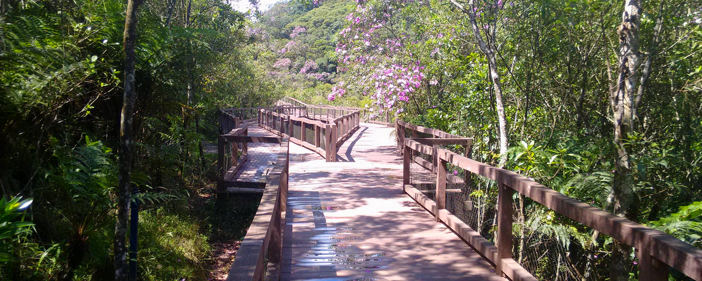

Agradecemos por visitar o site do Parque Ecológico! Esperamos que você tenha encontrado informações úteis e inspiradoras sobre nossas atividades e a beleza da natureza que nos rodeia. Convidamos você a nos visitar e vivenciar a magia do nosso parque pessoalmente. Juntos, podemos promover a conservação e apreciar a rica biodiversidade que torna nosso planeta tão especial. Até breve!
Se você tiver perguntas ou sugestões, entre em contato conosco:
Email: contato@parqueecologico.com.br
Telefone: (14) 1234-5678
Localização: Rua da 123, 57, Ourinhos - SP
Horário de Funcionamento: Todos os dias, das 8h às 18h.